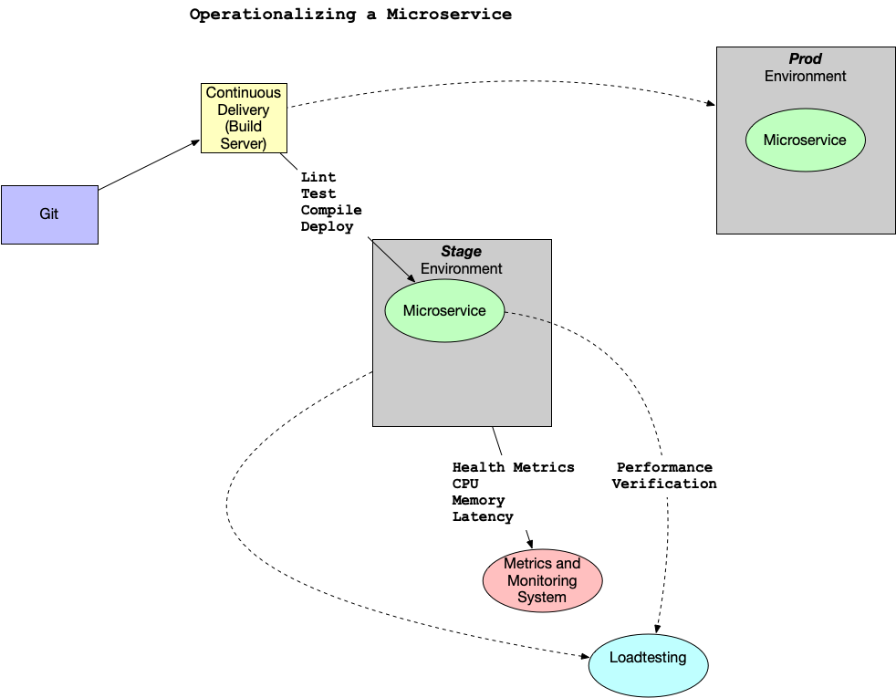
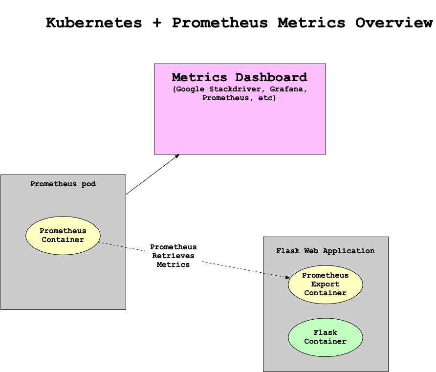

01. Alerts and Incidents Response
Untitled
Alerts and Incidents Response
ND#9991 C04 L05 A01 Alerts And Incedent Response
Operationalizing a Microservice Overview
Operationalizing a Microservice Overview
One important factor in developing a microservice is to think about the feedback loop. In this diagram, a GitOps style workflow is described.
- Application is stored in Git.
- Changes in Git trigger the continuous delivery server which then tests and deploys the code to a new environment. This environment is configured as Infrastructure as Code (IaC).
- The microservice, which could be a containerized service running in Kubernetes or a FaaS (Function as a Service) running on AWS Lambda, has logging, metrics, and instrumentation.
- A load test using a tool like locust.

- When the performance and auto-scaling is verified the code is merged to production and deployed
What are some of the items that could be alerted on with Kubernetes?
- Alerting on application layer metrics
- Alerting on services running on Kubernetes
- Alerting on the Kubernetes infrastructure
- Alerting on the host/node layer
How could you collect metrics with Kubernetes and Prometheus? Here is a diagram that walks through a potential workflow. Note that there are two pods. One pod is dedicated to the Prometheus collector and the second pod has a "sidecar" Prometheus container that sits alongside the Flask application. This all propagates up to a centralized monitoring system that visualizes the health of the clusters and trigger alerts.

Another helpful resource is an official sample project from Google Cloud Monitoring apps running on multiple GKE clusters using Prometheus and Stackdriver.
Untitled
Reference
Creating effective alerts
Creating Effective Alerts
At one company I worked at there was a homegrown monitoring system (again, initially created by the founders) that alerted on average every 3-4 hours, 24 hours a day.
Because everyone in engineering, except the CTO, was on call, most of the engineering staff was always sleep deprived. This system guaranteed that every night there were alerts about the system not working. The "fix" to the alerts was to restart services. I volunteered to be on call for one month straight to allow engineering the time to fix the problem. This sustained period of suffering and lack of sleep led me to realize several things: one, the monitoring system was no better than random; two, I could potentially replace the entire system with a random coin flip.
Scenario Image
Alerts by Day
Story Continued
Even more distressing, when looking at the data, it was clear that engineers had spent YEARS of their lives responding to pages and getting woken up at night. All that, and it was utterly useless. The suffering and sacrifice accomplished nothing and reinforced the sad truth that life is not fair. The unfairness of the situation was quite depressing, and it took quite a bit of convincing to get people to agree to turn off the alerts. There is a built-in bias in human behavior to continue to do what you have always done. Additionally, because the suffering was so severe and sustained, there was a tendency to attribute a deeper meaning to it. Ultimately, it was a false God.
Reference: Gift, Noah (2020) Python for DevOps: pg. 226
Worse than No Alerts
SOLUTION:
- Too many alerts
- Alerts that are not actionable
- Alerts that can be automated but are not
- Alerts that compromise the health of employees